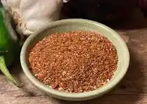

Skip the store-bought packets and bring bold, delicious flavor to your next taco night with this easy homemade taco seasoning! Made with a simple blend of pantry spices like chili, powder, cumin and paprika, this seasoning delivers the perfect balance of smoky, savory, and mildly spicy flavors. Best of all, you can customize the spice level to suite your taste!
This homemade taco seasoning recipe is perfect for ground turkey or beef, chicken or even your favorite veggies. It is quick to prepare, budget-friendly and made without additives or preservatives.